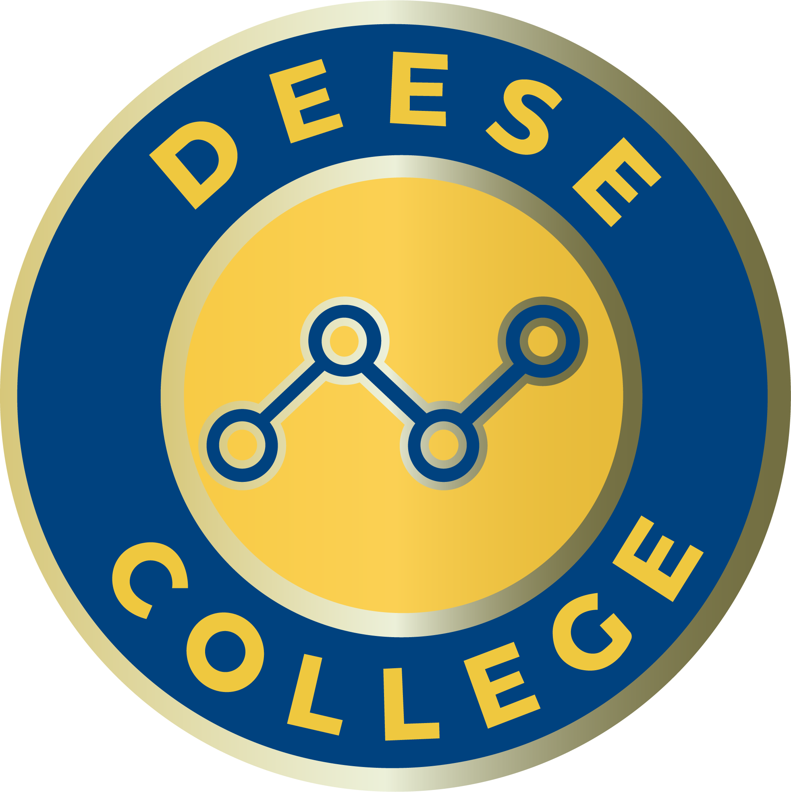
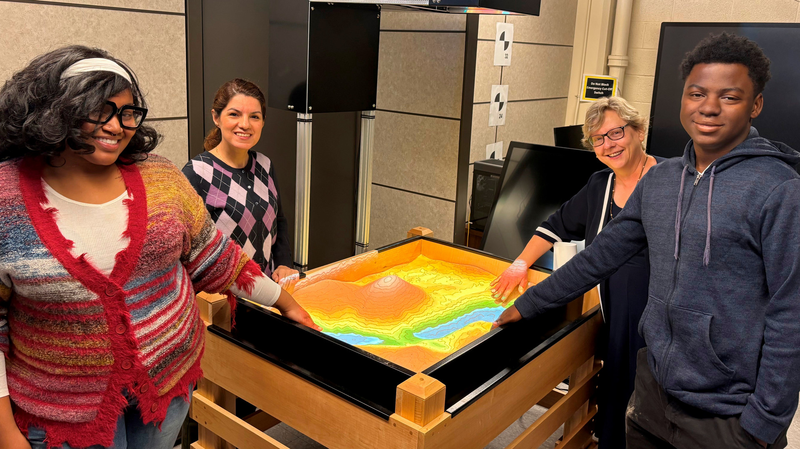
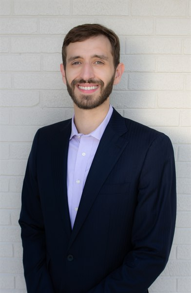
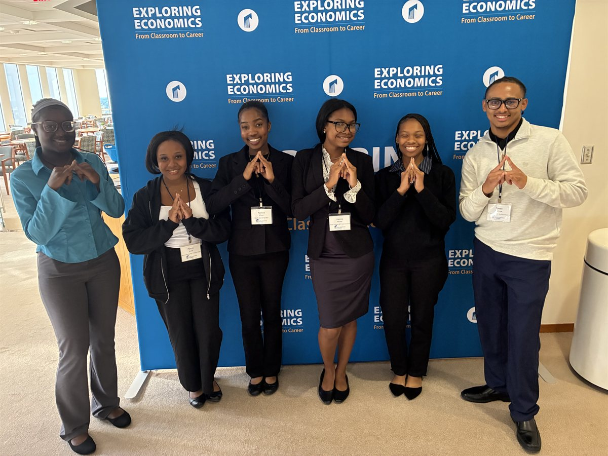

of Business and Economics

Welcome to the first issue of The Econ Edge, a newsletter written for you: the alumni of the Department of Economics at North Carolina A&T. We timed it for a homecoming like no other: the 100th Greatest Homecoming On Earth. Whether you crossed the stage last spring or decades ago, you are part of a century of Aggie Pride, and part of this department's story.
And what a story this year has been. Our faculty earned national and international awards, took economics to audiences on public radio, local television, and in The Wall Street Journal, and brought in more than $2 million in grant-funded research that puts our undergraduates to work on real problems. One of our students became A&T's first-ever Truman Scholar, and another was named an Obama Foundation Voyager Scholar. And every month, the department publishes the Piedmont Triad Economic Activity Index. You'll find it at the top of every issue.
The Econ Edge will arrive three times a year: at Homecoming, in March, and in August. We want it to be as much about you as about us, so tell us where life has taken you. See you on campus and Aggie Pride!
Ahead of the centennial, Dr. Cephas Naanwaab, associate professor of economics, told FOX8 that the 100th GHOE could generate at least $57 million in total economic activity, with more than 86,000 visitors expected from out of town. If that crowd tops 100,000, he estimates the impact could reach $80 million. The week is projected to support 245 additional jobs, with the largest share in dining.
It's applied economics at its best, and it isn't Dr. Naanwaab's only headline this year. He was also named one of NC A&T's Provost Seed Fellows, leading an AI-powered geospatial assessment of environmental pollutants across North Carolina.

View faculty profile →





- Fatiha Haidara was a delegate to the 2026 World Bank Group Youth Summit and was selected for the Goldman Sachs Possibilities Series.
- Olamide Akinkugbe was one of 500 scholars chosen from more than 3,000 applicants for the Thurgood Marshall College Fund Leadership Institute. She chairs the Deese College student senate.
- Reagan Hudson was selected for Michelin's Leadership U and for the North Carolina cohort of the Next Generation Voices Project on national security and foreign policy.
- Kaleb Conway placed third in the EMBxFMA FinTech Case Competition with FinLit AI, an AI-powered financial literacy coach.
- Maëlle Malangu was selected for the 2026 WBENC Entrepreneur Incubator, which prepares HBCU student entrepreneurs for a fall pitch competition.
- This summer, our majors interned at Capital One, DHL Supply Chain, Protiviti, Mutual of Omaha and Wells Fargo, worked in the Durham County Attorney's Office, and conducted research at NC State.

- Faith Johnson '23 graduated from UNC School of Law and passed the July 2026 Uniform Bar Exam.
- Dexanne Fernandez '26 joined Fidelity Investments as a Brokerage Operations Associate in its FidYou cohort.
- Aziarah Jones '22 is a second-year student at Georgetown Law, a RISE Fellow and Public Interest Law Scholar.
- Walter Hand III '25 works in Corporate & Investment Banking Operations at Wells Fargo.
- Brian Roper-Nelson '25 is a Harvard Law student and a 2026 Chief Justice Henry E. Frye–Brooks Pierce Diversity Summer Fellow.
- Simone Tapp '23, a Distinguished Craig Scholar, is pursuing an M.S. in Economics at UNC Charlotte.
- Francis Alim '25 was admitted to the University of Pittsburgh School of Law.
- Sullivan Anderson '24 is Digital Marketing & Events Lead at Chicago Innovation and founder of Sullivan Grace Speaks.
- Willie White '06, attorney, returned to campus to advise pre-law Aggies on the "So You Want to Be a Lawyer" panel.
- Tae'lor Jackson '19 is CEO of Panther Graphics in Rochester, N.Y., and serves on the board of the Women's Foundation of Genesee Valley.
next story
Where has your economics degree taken you?
This section belongs to our alumni, and we want your news in the Spring 2027 issue. Send us a sentence or two and a photo:
Mentor a Student
Share 30 minutes a month with an economics major navigating internships, grad school, or a first job.
Speak to a Class
Visit in person or by Zoom and show students what economics looks like in your industry.
Hire an Aggie Economist
Have an internship or entry-level role? Our students bring data, modeling and policy skills employers want.
Give Back
Support scholarships, student research and conference travel for the next generation of Aggie economists.
-
Oct
25–
Nov 1GHOE 100: The Centennial Edition A century of the Greatest Homecoming On Earth, with a full week of events across Greensboro. -
Oct
30Deese College Cookout Friday, 11 a.m.–3 p.m. on the Merrick Hall Lawn; food service begins at 11:30 a.m., and the Deese College Update follows at 1 p.m. in the Merrick Hall Auditorium. Pre-sold food tickets are gone, but a limited number of walk-up tickets will be available on the day. -
Oct
31Homecoming Parade & Game vs. Elon The centennial parade, followed by the Aggies hosting Elon at Truist Stadium. -
Dec
12–
13Fall Commencement A new class of Aggie economists joins the alumni ranks. -
Mar
2027The Econ Edge: Spring Issue Watch your inbox, and send us your news in time to be featured.